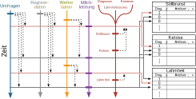
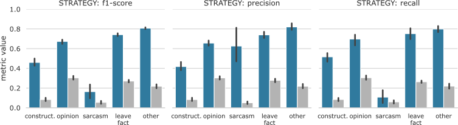
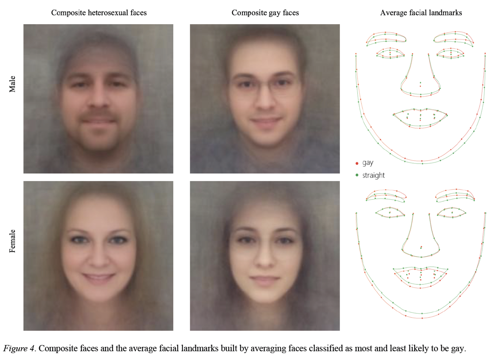

Vorlesung 2: Zusammenfassung Überwachtes Lernen

Vorhersage von Krankheiten bei Kühen
- Ziel: Vorhersage von Krankheiten bei Kühen basierend auf möglichst diversen Daten.
- Herausforderung: Integration von sehr unterschiedlichen Daten.
- Resultat: mäßige (Ketose, F1 = 0.52) bis gute (Stillbrunst, F1 = 0.74) Performance.

Illustration der Integration verschiedener, über die Zeitaches verteilter Datenquellen.
Siehe auch Lasser et al., J. Animal. Sci. (2021).
Siehe auch Lasser et al., J. Animal. Sci. (2021).
Identifikation von Gegenredestrategien
- Ziel: Die Effektivität verschiedener Gegenredestrategien gegen Hassrede messen.
- Herausforderung: sehr schwer fassbare Klassen wie z.B. Sarkasmus.
- Resultat: Klassifikation ist gut genug um im Mittel über den sehr großen Datensat (1.3 mio Tweets) einen Trend zu sehen.

Performance des Klassifikators für Gegenredestrategien. Siehe auch Lasser & Herderich et al., arXiv (2024).
Klassifikation sexueller Orientierung
- Ziel: Klassifikation der sexuellen Orientierung von Bildern von einer Dating Site.
- Resultat: Der Klassifikator liefert gute Performance. Die Autoren interpretieren das als Evidenz dafür, dass sich sexuelle Orientierung in Gesichtern ablesen lässt.
- Kritik: Es ist deutlich wahrscheinlicher, dass der Algorithmus die Orientierung und Behaarung des Gesichts erlernt hat.

Quelle: Wang & Kosinski J. Pers. Soc. Psychol. (2017).
Siehe auch: Calling Bull, Machine learning about sexual orientation?.
Siehe auch: Calling Bull, Machine learning about sexual orientation?.
Zusammenfassung
- Mit überwachtem Lernen können wir einen Algorithmus darauf trainieren, bekannte Muster wiederzuerkennen.
- Es gibt unterschiedliche Algorithmen für überwachtes Lernen wie Naive Bayes oder Entscheidungsbäume.
- Die Performance von Algorithmen des überwachten Lernens messen wir mit Genauigkeit bzw. F1 Wert (Klassifikation) und der mittleren quadrierten Abweichung (Regression).
- Die Performance hängt stark von den Trainingsdaten ab. Fehlende Daten und Verzerrungen können Probleme darstellen und zu Bias (underfitting) und Varianz (overfitting) in den Ergebnissen führen.
Ausblick nächste Vorlesung
Am 8.10. von 15:00 bis 16:45 im HS 10.11.
- Unüberwachtes Lernen: wenn wir die Ausgabewerte nicht kennen und uns in großen Datensätzen orientieren müssen.
- Dimensionsreduktion: wenn wir einfach zu viele Attribute in unserem Datensatz haben.
- Verstärkendes Lernen: wenn wir uns in einer komplexen Umgebung zurechtfinden müssen.